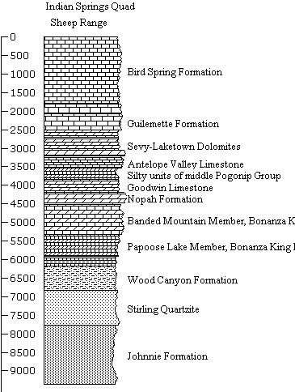

This has not been used extensively in about 15 years, and we are working on updating it to work with all the changes that have taken place in the program in that time. We also need to improve the documentation. If you want to use it, contact us for help, as we need to work on the error trapping (I have learned a lot in 15 years, and this code has not benefitted very much).
 |
A diagram is composed of three types of data, stored in ASCII files:
Control the appearance of the diagram by setting various options. |
Menu Structure: organization of the menus for this option of MICRODEM.
Create new data files
Directions for Creating Diagrams:
The lithologic patterns are in a file called ROCKS.PAT. This is a binary file that you cannot rename or view except in MICRODEM. It currently has about 150 patterns, some of which may be rather whimsical.
The file *.NAM is an ASCII file. It lists a three letter code for indexing into ROCKS.PAT, and a longer text description of the lithology. You can edit this file in any word processor or NOTEPAD. It can be created within STRATCOL, and the active NAM file can be set within the program. It allows you only to see the patterns you need when you are editing or creating columns.
Main options in the program include:
Last revision 1/17/2018